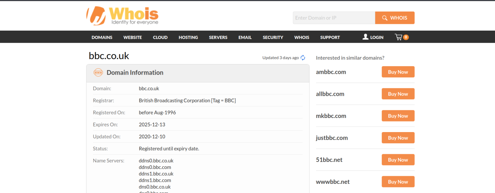
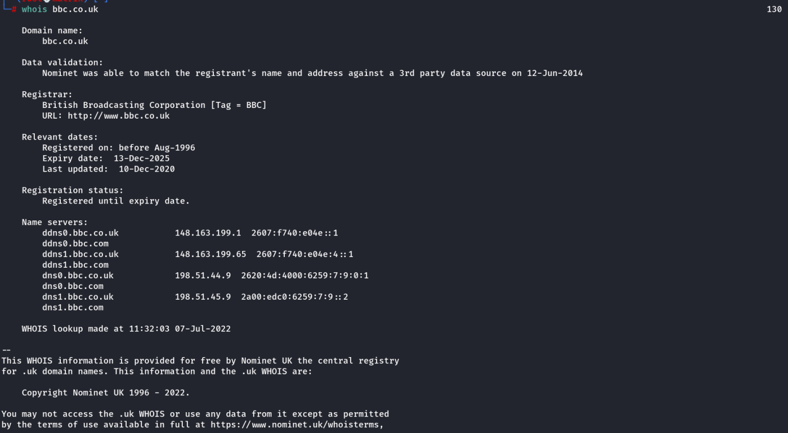

whois
Whois
Whois essentially allows you to query who a domain name is registered to. In Europe personal details are redacted; however, elsewhere you can potentially get a great deal of information from a whois search.
There is a web version of the whois tool
https://www.whois.com/whois/

Command Line:
whois <domain_name>
